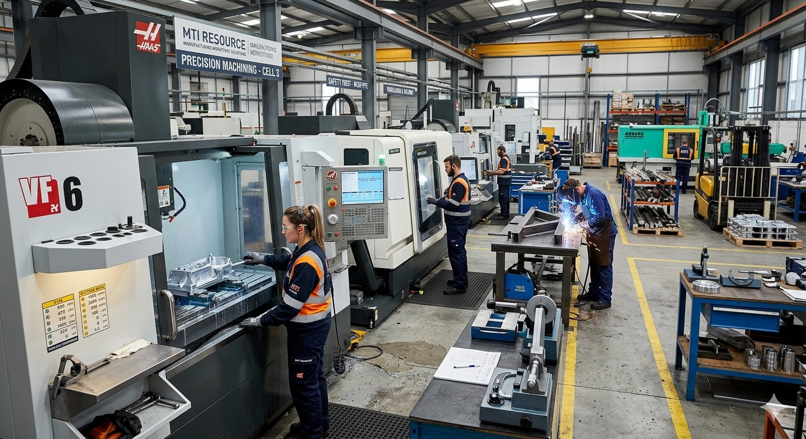

We connect employers with proven CNC machinists, toolmakers, and production specialists—vetted by recruiters who have actually worked the factory floor.
We don't just read CVs. With decades of hands-on experience, we understand how manufacturing environments actually run and what you need to hit your targets.
Because we have technical backgrounds, we screen candidates like production engineers. We know the difference between someone who can talk the talk, and someone who can actually operate the machinery.
Read Our Full Story
From CAD programmers to CNC machinists, every candidate is thoroughly pre-screened before they reach your shortlist.
Access vetted candidates across the UK and mainland Europe through a single point of contact.
Candidates pass trade tests, technical interviews, and competency grading before you ever see their CV.
We bring factory-floor knowledge to every placement. We evaluate candidates like production managers, not generalist recruiters.
We know materials, tolerances, and exactly what a good job looks like.
Every worker is graded on actual skills before they make your shortlist.
We understand your daily production targets and workforce pressures.
A clear, reliable process from our first call to their first day on the floor.
Tell us what you need, and we'll show you exactly how we can deliver. No jargon, just results.